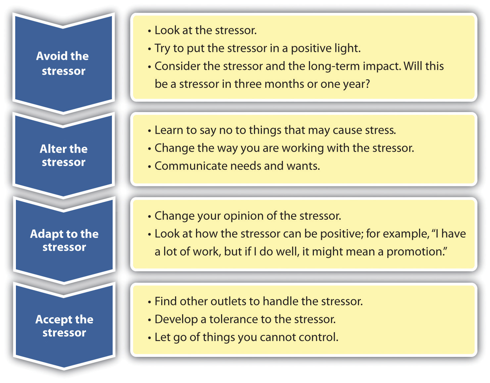

We all experience stress at one time or another. However, we can take action to assess and relieve the stress in our life. First, we do some self-analysis to determine the stressors in our life and how we handle it. This emotional intelligence skill (self-awareness) allows us to see what we need to improve upon. Then, we can apply self-management tools to help us manage the stress in our lives. The benefit of this identification and management is that it allows us to relate better to others both in our work life and personal life.
Look at your habits and emotions and really think about what is causing the stress. For example, Julie may be stressed about a project due on Friday, but the real stress may be because she procrastinated in starting the project, and now there isn’t enough time to complete it. Or perhaps Gene is stressed because his personality type causes him to put too many things on his to-do list, and he isn’t able to get them done. Accepting responsibility for the role we play in our own stresses can be the first step in maintaining a life with mostly positive stress!
Next, we can look at the way we currently deal with stress. For example, when Emily is feeling stressed, she smokes a pack of cigarettes and tends to have several glasses of wine at night. When she isn’t stressed, she doesn’t smoke and may limit herself to just one or two glasses of wine every few days. Some people smoke marijuana or use other drugs to cope with the stress of everyday life. These substances seemingly help for a period of time but prevent us from actually dealing with the stress—and doesn’t help us to gain skills in self-awareness. Understanding your current coping mechanisms for stress can help you determine what works to manage stress—and what doesn’t.
Figure 3.6 The Four As for Dealing with Stress
Once we do some self-analysis, we can use a method called the four As. The four As gives us four choices for dealing with a stressor:
When your roommate borrowed your car without asking, you need to pick up a friend from the airport, and you have friends coming over for dinner—all on the same night, finding a way to reduce stress is important. Reducing stress for every person is going to be different. Being able to recognize what helps you personally reduce stress is an important part to a healthy work and home life. For example, exercising may be a great stress reducer for Duana, but for Lisa, finding time to exercise might cause more stress than the actual exercise helps!
Researchers have found the following activities cut stress significantly:Elizabeth Sboboda, “Feeling Frazzled? 8 Ways to Decrease Stress,” MSNBC, February 15, 2009, accessed February 22, 2012, http://www.msnbc.msn.com/id/28719686/ns/health-behavior/t/feeling-frazzled-ways-decrease-stress/
Other ways to reduce stress might include the following:Jenny Kovacs Stamos, “Blissing Out,” WebMD, accessed February 22, 2012, http://www.webmd.com/balance/stress-management/features/blissing-out-10-relaxation-techniques-reduce-stress-spot
As this chapter has addressed, stress can be a positive motivator in our lives, but too much stress can create human relations issues, productivity, and other serious health issues. By practicing self-awareness and then self-management, we can begin to realize those things that cause us stress and deal with them in a healthier manner.